Ujaval Gandhi
Ujaval GandhiRukovanje nevažećim geometrijama (QGIS3)¶
Prilikom rada sa vektorskim slojevima podataka, možete naići na geometrijske greške. Ove greške često postaju deo vaših podataka nakon pokretanja geoobrade, digitalizacije, uređivanja ili konverzije podataka. QGIS3 dolazi sa ugrađenim alatima i algoritmima za otkrivanje i ispravljanje nevažećih geometrija. Ovaj tutorijal će vam pokazati tipičan tok rada za rukovanje nevažećim geometrijama u vašim podacima.
Белешка
Različiti softverski sistemi implementiraju različite pojmove validnosti geometrije. Ali vodeći standard za geometrijski model za upotrebu u GIS-u je OGC Simple Features Specifications (SFS). U ovom tutorijalu, koristićemo GEOS biblioteku da proverimo validnost geometrije koja koristi ovaj standard. Ova objava daje dobar pregled uobičajenih geometrijskih grešaka kako je definisano OGC standardom.
Pregled zadataka¶
Radićemo sa administratorskim graničnim slojem za Indiju i ispravićemo geometrijsku grešku za državni poligon.
Druge veštine koje ćete naučiti¶
Korišćenje algoritma Topološko bojenje za primenu šeme bojenja na sloj poligona.
Dobijte podatke¶
Datameet pruža shapefile-ove administrativnih granica koje je kreirala zajednica za Indiju.
Preuzmite zip datoteku Datameet Spatial Data Repository [~150 MB]. Preuzeta arhiva sadrži više fascikli. Raspakujte arhivu i koristite datoteke u fascikli States/.
Izvor podataka: [DATAMEET]
Procedura¶
Pregledajte preuzetu datoteku
India-States.zipu QGIS pregledaču. Proširite je i prevucite datotekuIndia-States.shpna platno mape.

Videćete novi sloj „Indija-Države“ učitan u panelu Slojevi. Idite na .
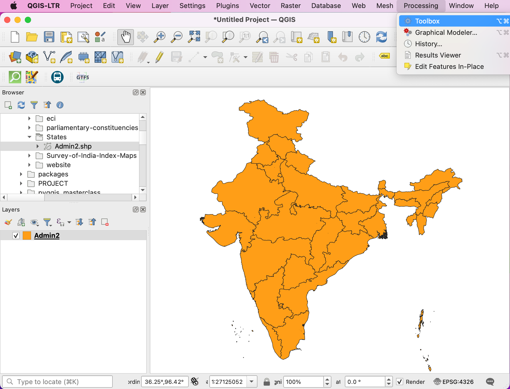
Pokušaćemo da pokrenemo algoritam za obradu na ulaznom sloju kako bismo pokazali kako nevažeće geometrije mogu izazvati probleme tokom operacija geoobrade. Potražite i pronađite algoritam . Dvaput kliknite da biste ga pokrenuli.
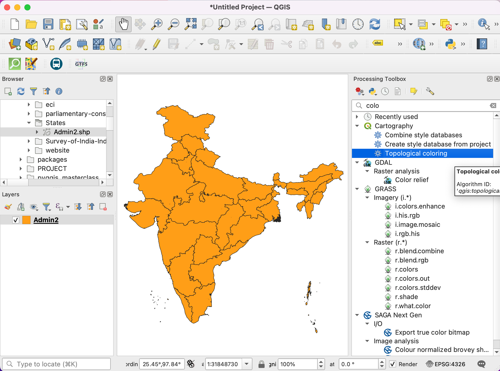
U dijalogu Topološko bojenje, izaberite
Indija-Državekao Ulazni sloj. Ostavite sve ostale parametre na podrazumevanim vrednostima i kliknite na Pokreni.
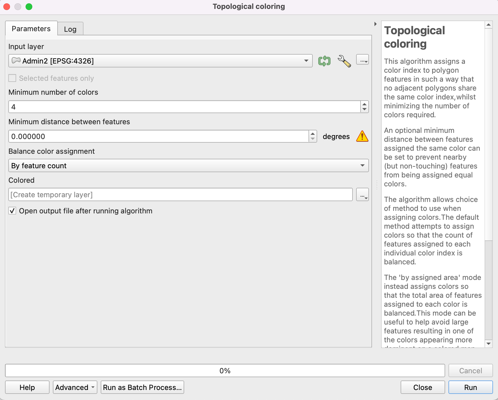
Белешка
Algoritam Topološko bojenje implementira algoritam za bojenje mape tako da nijedan susedni poligon nema istu boju. Ovo je korisna kartografska tehnika, a „Teorema o četiri boje <https://en.wikipedia.org/wiki/Four_color_theorem>”_ kaže da su 4 boje dovoljne da se postigne ovaj rezultat. Postoji verzija ove teoreme zasnovana na teoriji grafova pod nazivom „Teorema o pet boja <https://en.wikipedia.org/wiki/Five_color_theorem>”_. Implementacija QGIS algoritma zasniva se na grafovima, tako da ćete u praksi videti da će složeni slojevi poligona poput ovog zahtevati do 5 boja.
Dok se algoritam izvršava, videćete upozorenje prikazano u kartici Log. 1 element u ulaznom sloju imao je nevažeću geometriju i preskočen je tokom obrade. Podrazumevano podešavanje za obradu nevažeće geometrije u okviru alata za obradu nalazi se na i podešeno je na
Preskoči (ignoriši) elemente sa nevažećim geometrijama. Ovo je dobro podrazumevano podešavanje, ali ako je vaš unos veliki, možete propustiti ovo upozorenje i možda nećete znati da je uneti element preskočen. Možda ćete želeti da promenite vrednost naZaustavi izvršavanje algoritma kada je geometrija nevažeća.

Nazad u glavnom QGIS prozoru, videćete novi sloj
Coloreddodat na Layers panel. Primetite da novom sloju nedostaje stanje koje je imalo nevažeću geometriju. Sada znamo da je ovaj određeni poligon stanja imao nevažeću geometriju, ali ne znamo šta je bio uzrok. To možemo lako otkriti. Potražite i pronađite algoritam .
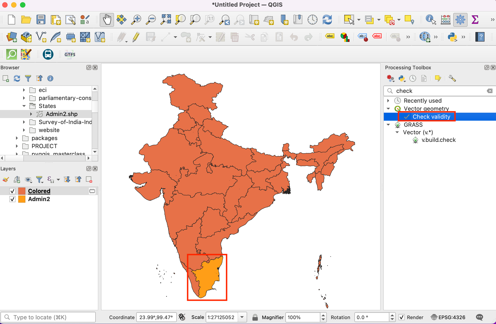
U dijalogu Proveri validnost, izaberite
Indija-Državekao Ulazni sloj. IzaberiteGEOSkao Metod. Kliknite na Pokreni.
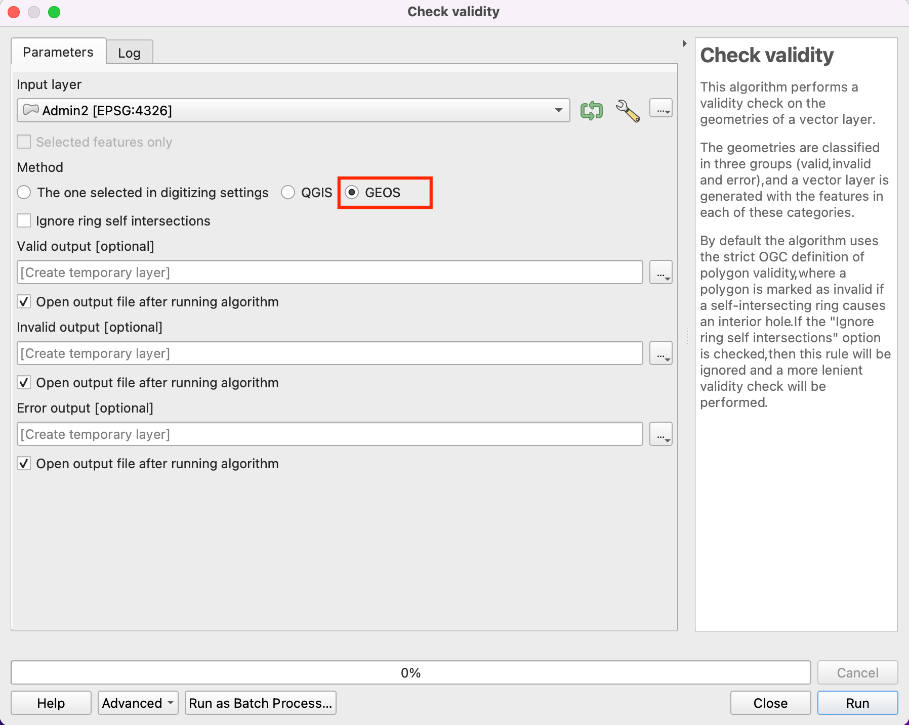
Kako algoritam završava obradu, videćete 3 nova sloja u panelu Slojevi -
Važeći izlaz,Nevažeći izlaziIzlaz greške. SlojIzlaz greškesadrži lokacije i opis geometrijskih grešaka. Kliknite desnim tasterom miša na njega i izaberite Otvori tabelu atributa.

Белешка
Dokumentacija QGIS-a ima detaljan članak o „Vrste poruka o greškama i njihovim značenjima <https://docs.qgis.org/testing/en/docs/user_manual/processing_algs/qgis/vectorgeometry.html#types-of-error-messages-and-their-meanings>”_ koji objašnjava uzroke svih grešaka.
Videćete da je poruka o grešci Samopresek prstena. Izaberite red i kliknite na dugme Zumiraj mapu na izabrane objekte. Kako uvećavate, videćete uzrok geometrijske greške.
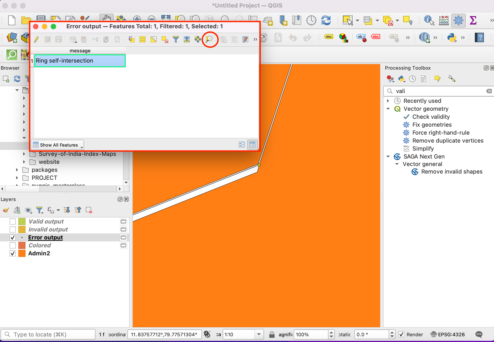
QGIS dolazi sa ugrađenim algoritmom za automatsko ispravljanje geometrijskih grešaka. Potražite i pronađite algoritam . Dvaput kliknite da biste ga pokrenuli.
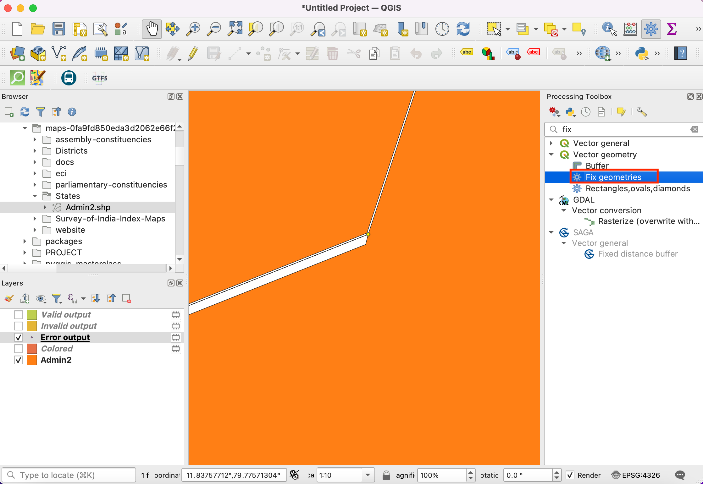
U dijalogu Fix Geometries, izaberite
India-Stateskao Input layer i kliknite na Run.
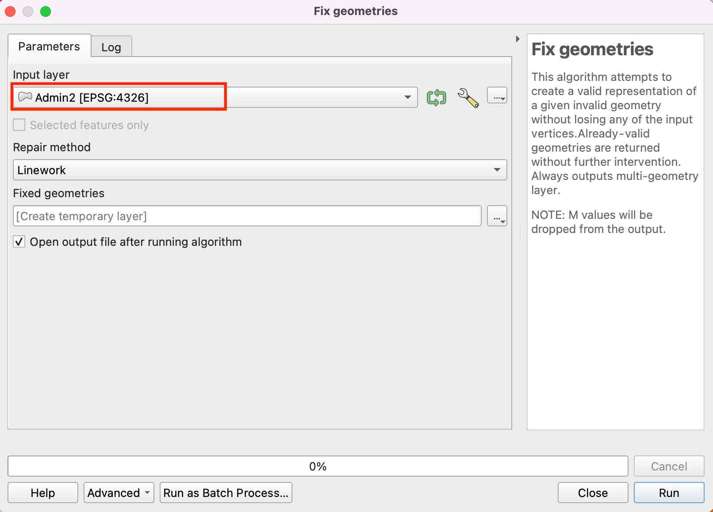
Novi sloj „Fiksne geometrije“ biće dodat na panel Slojevi. U ovom trenutku, greška u geometriji je ispravljena i možete pokrenuti bilo koji algoritam za obradu na ovom sloju bez problema. Ali možemo videti da i dalje postoji razmak između susednih poligona koji je neočekivan i može izazvati topološke greške u budućnosti. I ovo možemo popraviti uređivanjem poligona. Kliknite na dugme Uključi/isključi uređivanje u Traci sa alatkama za digitalizaciju. Izaberite Alat za čvorove i iz padajućeg menija izaberite
Alat za čvorove (trenutni sloj).

Kada je alat za vrhove aktivan, kliknite na vrh da biste ga izabrali. Možete pritisnuti taster Delete da biste obrisali vrh ili ga prevukli da biste ga pomerili. Možete pomeriti vrh tako da ivica poligona sada dodiruje susedni poligon.
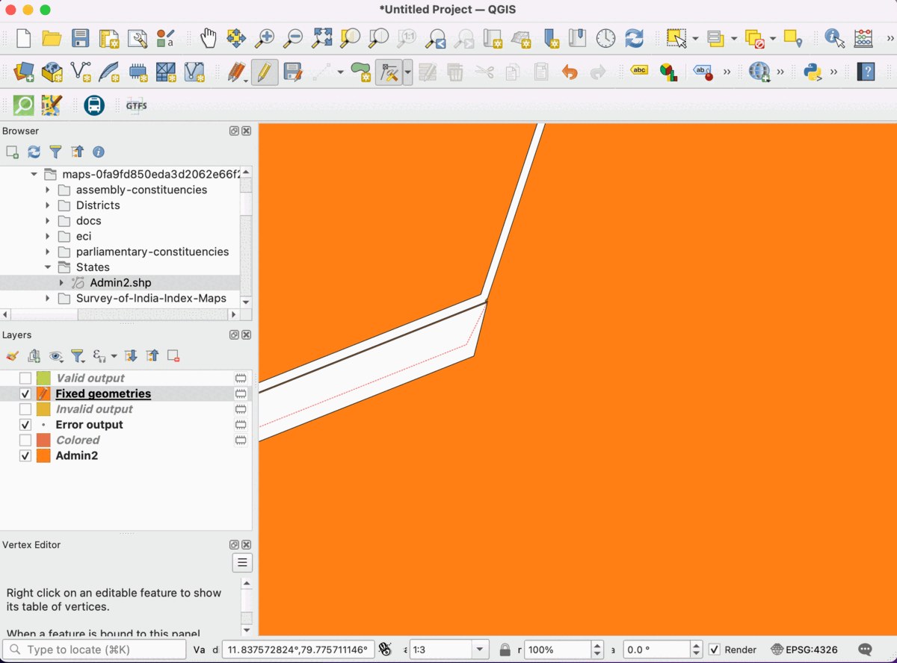
Kada završite, ponovo kliknite na dugme Uključi/isključi uređivanje i kliknite na Sačuvaj.

Hajde ponovo da pokrenemo algoritam .
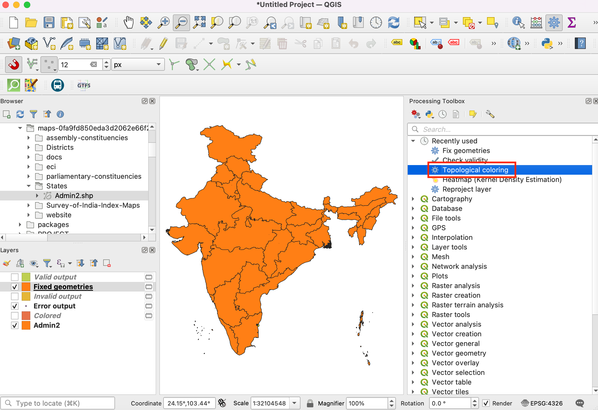
U dijalogu Topološko bojenje, uverite se da ste izabrali
Fiksne geometrijekao Ulazni sloj. Kliknite na Pokreni.
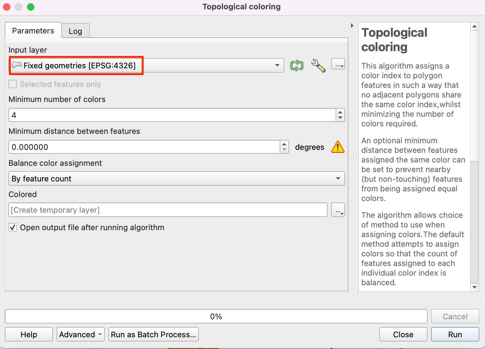
Videćete da algoritam radi bez ikakvih grešaka i da će novi sloj „Obojen“ biti dodat na panel Slojevi. Imajte na umu da algoritam ne boji sloj sam po sebi, već radi tako što svakom poligonu dodaje novu kolonu pod nazivom „color_id“ koja se može koristiti za dodeljivanje jedinstvene boje koja se razlikuje od susednih poligona. Izaberite sloj „Obojen“ i kliknite na dugme Otvori panel za stilizovanje slojeva.
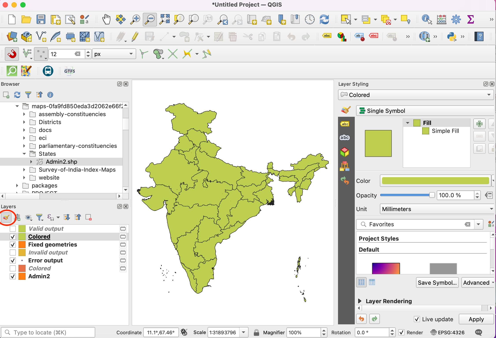
Izaberite renderer „Kategorizovano“ i kolonu „identifikator_boje“ kao Vrednost. Kliknite na Klasifikuj. Sada ćete videti mapu obojenu tako da susedni poligoni imaju različite boje.

If you want to give feedback or share your experience with this tutorial, please comment below. (requires GitHub account)